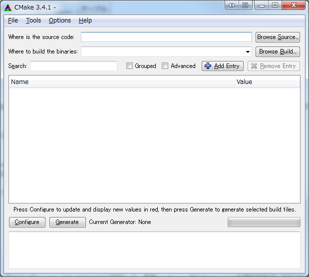

C/C++は面倒。
CMake
CMakeって有名ですけど、.NETで生きてきた私にとって、「makeの親戚？」という程度の(間違った)認識だったので、いざ使えと言われ、ビクビクしながら使っていると案の定、エラーの文字列で「ムキー」ってなるわけで。
OpenCVを使ったサンプルプログラムとかって、よくCMakeで使えるようになっているけど、いつも忘れるのが、OpenCVのパス設定方法。
だからメモ。
CMakeList.txtのあるフォルダをcmake-gui.exeで開き、ビルドに必要なバイナリデータの出力先を設定。
その後、Configureを押下すると、OpenCV_DIR-NOTFOUNDって出るときがあります。
こういうのは、大抵OpenCVConfig.cmakeがソースフォルダなどにないパターン。
なので、このOpenCVConfig.cmakeが存在するパスを指定します。

通常、OpenCVをインストールしている場合は、
- C:\Program Files\OpenCV\2.4.11\build\OpenCVConfig.cmake
- C:\Program Files\OpenCV\3.0.0\build\OpenCVConfig.cmake
のように、buildフォルダの下に存在します。
なので、上の場合は、C:\Program Files\OpenCV\2.4.11\buildをCMakeのOpenCV_DIR-NOTFOUNDに設定して、再度ConfiguraまたはGenerateを押下すれば、ビルドに必要なファイル群が無事に出力されます。
Conclusion
C/C++を本職にしている人たちって、「言わなくてもわかるよね?」的なことをわざわざ言ったり、書いたりしないので、答えを見つけるのに苦労します。
いや自分の経験が浅いのが悪いんですけど。